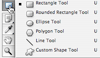
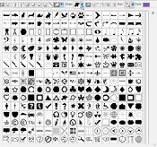

Adding Shapes to Your Logo:
Shapes can change the overall feeling of a logo. Swoops and swirls can make them whimsical and sharp, bold lines can make them serious.
To add different shapes to your design, click on the shape tool on the left-hand menu. Once the shape tool is selected, you can change the shape from the options that pop up on the right or from the menu on the top of the screen.
If you would like to add a new shape, you will need to add a new layer. This way, you will be able to move each shape individually when you make changes in the design. When creating the shape, hold down shift to keep the aspect ratio the same (your circle will be round and not oval).
When the custom shape tool is chosen, an abundance of different shapes appear in the top of the menu bar. At first this may not be noticeable, but when the button to the right of the tool is selected, all of the options appear. When creating these shapes, holding down the shift key comes in very handy, so the images don't become distorted.
Once you have made your image, you may want to change the general shape. To do this, make sure to have the shape tool selected and the layer of the shape you want to work on. Then, right click (or control click for Macintosh) the shape and select "Free Transform Path." When you are finished, just double click your shape to confirm your changes.
 **If you would like to change the shape more, while you have free transform selected, go to the top menu bar and all the way to the right click on the first icon on the left. When you scroll over it "Switch between free transform and wrap modes."
**If you would like to change the shape more, while you have free transform selected, go to the top menu bar and all the way to the right click on the first icon on the left. When you scroll over it "Switch between free transform and wrap modes."